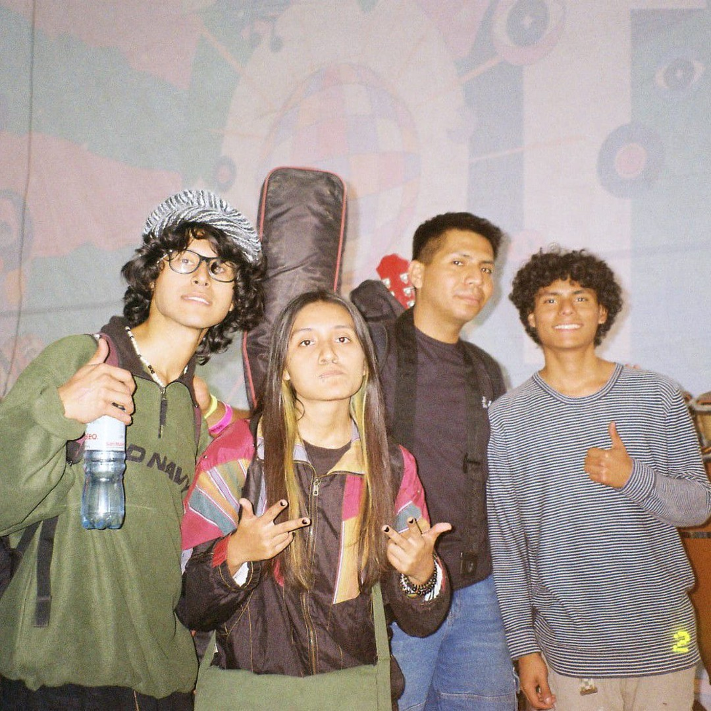
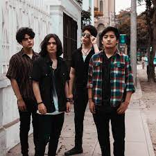

El rock alternativo en Perú ha evolucionado desde el rock tradicional, con escenas importantes en los años 90 y la actualidad, abarcando subgéneros como el indie, grunge, post-rock y el dream pop. Grupos como Los Mojarras, Mar de Copas y Libido son considerados parte de la escena de los 90, mientras que en la actualidad surgen bandas nuevas y sellos independientes que revitalizan el género con influencias diversas como el punk, surf rock, reggae y la música latinoamericana. ha evolucionado desde la influencia de géneros como el grunge y el post-punk hasta dar lugar a una escena diversa con bandas que mezclan el rock con música peruana. Entre los artistas más destacados se encuentran Mar de Copas, Libido, Campo de Almas y Los Mojarras. También existen proyectos más recientes como Kanaku y El Tigre y Cocaína, además de solistas como Len Estrada.
Bandas y artistas representativos
De los 90 y clásicos:
Los Mojarras, Campo de Almas, Mar de Copas, Libido, Radio Criminal.
Contemporáneos:
Bandas: Kanaku y El Tigre, Cocaína, Laguna Pai, Los Protones, Mundaka, Banana Child, Resplandor, Puna, We The Lion, Cementerio Club.
Solistas: Francisco Chirinos, Alejandro y María Laura, Danitse, Lorena Blume, Álex Darko.
(Wikipedia 2023)
¿Qué es el rock alternativo?
El rock alternativo es un subgénero del rock que se define por su oposición al rock comercial y que incluye una amplia gama de estilos como el post-punk, el indie rock, el grunge y el britpop. Surgió en los años 80 como una alternativa al pop y al rock dominante de la época, priorizando la expresión artística sobre el éxito comercial, el uso de guitarras distorsionadas y a menudo abordando temáticas sociales y personales. Se caracteriza por ser una alternativa al rock comercial y abarca una amplia gama de estilos, como el post-punk, el punk rock, el new wave, el hardcore punk, el grunge y el britpop, entre otros. Su principal distintivo es la innovación y experimentación sonora, priorizando la expresión artística y el mensaje por encima de las ventas comerciales. La nueva década trajo nuevas bandas y nuevos sonidos por explorar. La facilidad para grabar, la madurez de muchos músicos, y la desfachatez para exponer sonidos personales ha generado la multiplicación de artistas con ganas de demostrar su trabajo. La salida al mercado de sellos discográficos independientes (los únicos) como Internerds Recors, A Tutiplén, Repsychled, Descabellado Records y Hype Records derivaron en el lanzamiento de nuevas bandas y solistas, como en la reedición de clásicos peruanos, en muchos casos poco conocidos.
RENACIMIENTO ACTUAL
Mezcla influencias de géneros como el grunge, indie rock, post-rock, surf rock, reggae, punk y la música latinoamericana, creando una identidad propia, Utiliza la música como un vínculo para la identidad nacional, a menudo incorporando elementos de la música criolla y las raíces ancestrales. La década de los 90 se destaca por el auge del rock alternativo peruano, con bandas icónicas que se convirtieron en referentes, La facilidad de grabación y la aparición de sellos discográficos independientes han impulsado la creación de nuevas bandas y el resurgimiento de otros grupos.El rock alternativo peruano se encuentra en un renacimiento gracias a una nueva generación de bandas que fusionan géneros, experimentan con sonidos y alcanzan audiencias internacionales, como We the Lion y Kanaku y El Tigre. Estos artistas, junto con propuestas más ruidosas como el indie rock, post-punk y noise rock (representadas por bandas como Los Outsaiders y Moldes), demuestran una revitalización del género con un sonido más global y diverso. (@tvperu 2024)


EVOLUCIÓN
Si bien el término originalmente abarcaba todo lo que no era mainstream, el éxito de subgéneros como el grunge en los 90 hizo que se popularizara masivamente. Hoy en día, "alternativo" puede referirse a música hecha con medios no tradicionales. Se define por su auge en los años 90 con bandas como Mar de Copas, Libido y Cementerio Club que fusionaron influencias grunge y anglosajonas, y su posterior expansión en la década de 2010 con la aparición de una escena independiente y géneros más variados, influenciados por sellos independientes y plataformas digitales. Las bandas de los 90 establecieron las bases del género, mientras que la nueva década trajo una mayor profesionalización y diversidad sonora, con bandas que exploran desde el post-rock hasta el surf rock. YA HABIENDO DESGLOSADO LO QUE ES EL ROCK ALTERNATIVO, VAMOS HA INFORMARNOS DE ALGUNAS DE LAS BANDAS EMERGENTES DE ROCK ALTERNATIVO DEL PERÚ. (wikipedia 2023)